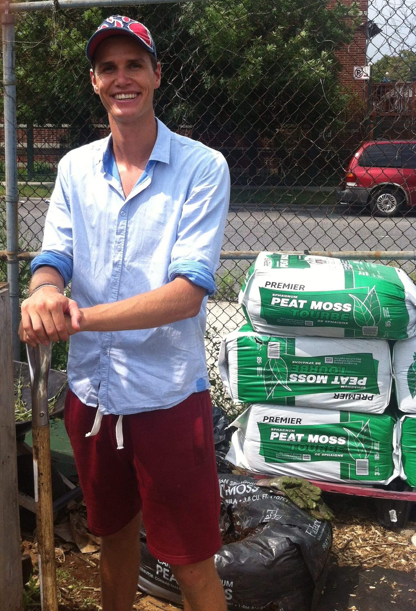
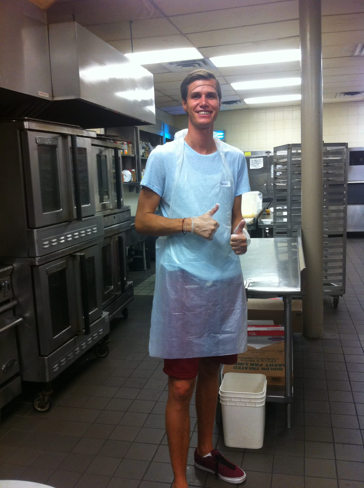

2014
NEW YORK
Foodbank of New York City
In New York heb ik gedurende drie maanden gewerkt bij de voedselbank. Op verschillende dagdelen hielp ik in de Harlem Community Kitchen en de Brooklyn Community Gardens. Op deze manier was ik in contact met mensen die het moeilijk hadden om rond te komen en leerde ik veel over community work in NYC. Dit heeft me een hele andere kant van New York leren kennen.
De eerste keer werken in de Community Kitchen was voor mij spannend. Er stond al een lange rij mensen te wachten en hier moest ik me langs wurmen om binnen te komen. De eerste keer wilde ik hierom bijna doorlopen. Ik ben blij dat ik dit niet heb gedaan en zo in aanraking ben gekomen met de voedselbank in New York. Het heeft mij laten zien dat er in New York een structureel probleem is van te hoge kosten van levensonderhoud tegenover te lage lonen. 1,5 miljoen New Yorkers zijn afhankelijk van de voedselbank*. Ter vergelijking gebruiken in heel Nederland 160.000 de voedselbank.
Tegenover deze schijnende cijfers merkte ik in de gesprekken met de vrijwilligers dat er wel een hoge sociale verantwoordelijk heerst. Men zag het als iets normaals om als vrijwilliger te helpen. Dat hoorde je als goede burger te doen kreeg ik te horen. Zo waren er ook vrijwilligers van jong tot oud. Van scholieren en studenten tot ouders en opa’s en oma’s. Mooi om te voelen dat mensen zelf het heft handen nemen op het moment dat het sociale vangnet vanuit de overheid niet toereikend is.
Het is een speciale ervaring voor mij geweest om te werken op plekken in New York waar ik normaal niet snel zou komen. Diep in Harlem en Brooklyn in de minder goede wijken. Dat elke locatie de eerste keer spannend voelde geeft aan hoe ik uit mijn comfort zone ben gestapt. Gesprekken met vrijwilligers en daklozen hebben mij kanten van het leven laten inzien waar ik eerder niet bij stil stond. Het is heftig als je met iemand spreekt met een beurs geslagen gezicht die zegt. “Ik heb voor mezelf moeten opkomen. Als je dat niet doet pakken ze alles van je af”. Deze man was vervolgens ook heel geïnteresseerd in mij en ik heb echt goede gesprekken met hem kunnen voeren over het “echte” leven.
Copyright © Domain. All Rights Reserved.
Designed by HTML Codex